A 30.5 mm teardrop earring with 45 RGB LEDs on two rings round an RP2350A, a LiPo cell on the
back and one button. Variant A (45 WS2816C pixels in three switched zones) is routed and DRC-clean.
Variants B–F study driving plain RGB LEDs from a matrix driver instead, as round-pendant does:
cheaper LEDs and about $3 less per board, but 180 more LED pins to route in the same space.
Now 2026-11-06: matrix variants. E (4L: driver off the LEDs, back unloaded, 0.10 mm rules) routes to 4 open + 2 necks (seed 6) or 5 open + 0 errors (seed 3) with 6600 s; gains had slowed to ~1 open per 20 min. F (E on 6 layers) routes 0 open on every seed, 2 neck errors on the best. Neither installed. Variant A stays the gate-7-passed board.
Needs you
Matrix earring: 6 layers (variant F, 0 open, 2 necks to fix) or 4 layers (variant E, 4-5 open after 110 min: CS lines, USB D+ at the tip, VSYS; would need hand routing)? Then install that route and clean up gate 7.
Pixel chain: WS2816C
The board of record. 45 WS2816C-1313 addressable pixels on a daisy chain, split into three zones
(left, right, centre), each with its own load switch, level shifter and In2 supply pour.
The gate-7-passed board: 0 DRC errors, 0 unconnected (ultraroute seed 2, 2026-11-03). RP2350A and
LEDs on the front, flash, charger, LDO and power path on the back under the cell.
The same 45 LEDs as a 9 SW × 15 CS matrix. B uses round-pendant's IS31FL3741A and the 1 mm
XL-1010. C swaps in the cheaper AW20198QNR and the 1.6 × 1.5 mm XL-1615. D, E and F keep the
LEDs, the centred MCU, the button and USB fixed, and move everything else to make room for routing.
The first matrix board, after round-pendant: one IS31FL3741A on the back and 1 mm LEDs at 45° to
the ring. 48–55 open on 4 layers and 8–10 on 6, so the driver and LED were swapped for C.
Round-pendant's low-density parts: the AW20198QNR (half the quiescent current) and the larger,
cheaper XL-1615 set square to the ring. The driver sits under LEDs 8–10; 37–45 open with the
GND plane kept.
C with the driver moved to the only back pocket clear of every LED, south of USB-C; the USB ESD
chip, series resistors and BOOTSEL timer moved to make room. 28–37 open with a 0.1 mm matrix class.
D with 23 back parts moved off the LEDs' via room (the charger to the front), 1 mm test pads and
0.10 mm rules board-wide. 15–19 open in 15 minutes, 7 in 45, 4–5 in 110 (see the route card).
6 layers0.10 mm rulessame placement as E−$3.0 vs A + 6L
Variant E with two more signal layers. Routes to 0 open on all six seeds in 15 minutes; the best
seeds leave two narrow-neck DRC errors to clean up. The placed board; the route is on the card below.
Router trials of the matrix boards (ultraroute 99bb7ca, the recipe in route/earring-*/recipe.json),
judged by KiCad 9 DRC after a refill, with the In1 GND plane kept whole. Not installed in hw/: the
6-or-4-layer decision is still open.
Every connection made, GND plane whole. Two DRC errors left, both necks: where U1 pin 15's IMU_SCL
escape meets its via, and a sliver of the In2 3V3 disc. Small hand fixes before a gate-7 review.
The closest 4-layer result, from a 6,600 s run, with the GND plane whole. Open: CS14, CS6, USB D+ and
VSYS; 2 neck errors at SW3/SW7 vias. Seed 3 reached 5 open with 0 errors. Gains had slowed to about one open
per 20 minutes. USB D+ is open on 4 of 6 seeds, which points to a hand fix at the tip rather than more time.
103 nets, 1,734 track segments, 381 vias1,419 mm of routed track
Schematic
1 sheetUser
3D
164 of 167 parts drawn from a modelD2, D4, J1, Q2–Q10, U6, U7 with a stand-in from the project file3 name no model (TP1–TP3)
Built 2026-11-06 09:46 by pcbview from the KiCad files above:
python3 -m pcbview build pcbview.toml. Nothing here is drawn by hand — the layer plots, the model and the
sheets are KiCad’s own exports.
board viewer by pcbview from the board on disk
(scripts/view.sh build pcbview.toml, pinned at
vendor/pcbview) · built Nov 6 09:46 ·
open full page
Status
HEAD95f4bd3 Publish the dashboard to GitHub Pages (scripts/publish_pages.py); link it in the README · board written Nov 3 15:30 · DRC0 errors, 0 unconnected — STALE, board is newer(69 total, Nov 2 13:36)
Updates
Nov 3Gate 7 passes: parts off the silk art, core supply fixed, new viewerlayoutbenchNothing sits on the name or the GitHub URL any more. The name moved to the open area west of the MCU, because the LED data shifter only routes where it is. The RP2350's core supply now follows the official layout. DRC is 0 errors and 0 unconnected, and the independent review passed. The page now embeds the pcbview viewer, with the LiPo cell in 3D.
Back: D2, R17 and Q2 moved off the URL, and its letters are spaced by their real
widths, so none of them touch. Front: Q3 and R23 were tried in every spot clear of
the name, and each one left MCU signals unrouted, so the name moved instead, at 60° like
"Be Gay".
Core supply: the switcher pour reaches the chip's core ring through a via, 3.65 mm
of 0.6 mm back copper and a via (~10 mΩ), as on the official board. C5, C6 and
C13 each have a short path to their pins. Open, all minor: VBATT got longer (107 mΩ,
within budget), router leftovers, and signals over the VREG plane slots.
Nov 2DRC clean; the routing review finds the core supply in pieceslayoutbenchA small no-pour area removed the last DRC error, a 0.077 mm strip of ground pour between a USB-C resistor and a VBUS via. KiCad had reported it at the wrong place. DRC is now 0 errors and 0 unconnected. The independent review still fails gate 7: the RP2350's 1.1 V core supply is five separate copper pieces on the top layer.
Review: the switcher's output pour reaches the chip's core-supply ring only
through 14 mm of thin inner-layer track and 3 vias (~75 mΩ), for a 2 mm
distance; the shipped rev 1 had it as one piece. Fix: locked top-layer spokes from pin 50
and from C6/C13 into the ring, then re-route. Also open, all minor: pad joints between 0.11 and
0.127 mm, router leftovers, ADC lines over the VREG plane slots, seven decouplers
without a nearby ground via.
Nov 2Re-routed with no vias in pads: one pour sliver leftlayoutbenchA new design rule keeps via holes 0.1 mm off every SMD pad (there were 124 in pads). On ultraroute 99bb7ca, seed 1, everything routes, and the battery path is 63 mOhm, down from 112. DRC has one error left: a 0.077 mm sliver in the front ground pour.
Changes: a physical_hole_clearance rule from vias to SMD pads, and
route.py's own vias moved off their pads. route.py now seeds KiCad's UUIDs, so the router's
input is identical from run to run. Ultraroute is pinned to 99bb7ca (exact hole clearance,
touching vias mended, joint floors), and the recipe uses seed 1.
Result: 0 unconnected, 0 via holes in pads. VBATT 63 mΩ at 0.4 mm;
VBUS 50 mΩ. The crystal is on the top layer with no vias. DRC: 1 error, a fill
sliver at (112.46, 91.73), waiting on a call: a small no-pour area, or log it.
Nov 1Re-routed with ultraroute's joint fix: battery path fixed, 3 pad joints leftlayoutbenchultraroute 0b9016f no longer leaves track ends joined only by their round caps, and VBATT is in the power class now. The battery path is 0.4 mm and 98 mOhm (was 0.15 mm, 289 mOhm), and the crystal stays on the top layer. DRC now checks copper joint width, and it fails on three router joints onto 3V3 pads.
Changes: VBATT joined VBUS and VSYS in the 0.4 mm power
class, with a 0.2 mm floor. DRC enforces a 0.09 mm minimum on
every copper joint, as an error. XIN, XOUT and XTAL_R are locked
top-layer pre-routes with no vias. The leftover In4 rule area is gone.
ultraroute is pinned at 0b9016f.
Result: 0 unconnected. VBATT and CHRG have no necks.
connection_width reports 4 errors, all on 3V3 or GND:
U8 pad 5, 0.066 mm: the only feed to the Schmitt inverter.
U6 pad 5, 0.053 mm (the IMU, which has a second track).
U6 pad 2, from a 0.02 mm track.
A 0.074 mm sliver in the back GND pour.
These are ultraroute's track-to-pad joints, sent to the ultraroute
project. Gate 7 stays open.
Oct 31Gate 7 routing review: failed on copper necks in the battery pathlayoutreviewbenchDRC is clean, but ultraroute left 81 track joints where the ends don't meet and copper connects only where the round ends overlap. Two are VBATT's only path, 0.05 and 0.077 mm wide, below JLC's 0.09 mm. A re-route is needed.
Blockers: VBATT on In2 at (98.68, 88.08) has a 0.05 mm
neck that is the cell's only path to Q2 and the charger. At
(107.3, 108.35) a 0.077 mm neck is its only path to Q2. Either
one etching open would give a board that never runs from its battery.
CHRG has a 0.05 mm neck too. KiCad's default rules don't check copper
connection width, so the project DRC passed them.
Cause: ultraroute's input for this run has none of these joints;
its output has 81. Filed in design/ultraroute-requests.md.
Also:
VBATT is not in the power class. It runs 54.6 mm round the edge at
0.15 mm (~0.29 Ω) for a 24 mm distance.
XIN/XOUT go through In2 with two vias each, next to USB_DM.
Fine: 0 errors, 0 unconnected, parity benign. The GND plane is one
piece. The USB pair is matched (24.5/24.6 mm). VLED copper keeps its
0.2 mm floor.
Full gate: design/gates/phase7.md.
Oct 27LED supply tracks widened to 0.3 mm and re-routedlayoutbenchVLED_L/C/R now have their own net class: 0.3 mm tracks, narrowed to no less than 0.2 mm at the LED pads. They were 0.15 mm. The re-route is complete. KiCad: 0 errors, 0 unconnected, 0 dangling.
Rules: a new vled net class (0.3 mm) takes
VLED_*, and a rule in earring.kicad_dru sets its
minimum at 0.2 mm. The largest zone, VLED_R, feeds 19 LEDs.
Route: lab experiment vled-width-1, run
s0. Same recipe as the pour-aware route
(--planes In1.Cu --pour-cost 3), seed 0, on ultraroute
8c691ec. Seeds 0 and 3 routed completely; seeds 1 and 2 left 3 and 2 nets
open.
Against the pour-aware route:
VLED tracks: 196 mm at 0.3 mm and 3.5 mm necked to
0.23 mm. None are narrower.
In2 LED supply pours: 335 mm² (was 326). VLED_C 55 in 4
pieces, VLED_L 132, VLED_R 148.
3V3: 106 mm². GND plane: one piece, 670 mm².
Vias: 479 (was 495).
USB pair: 24.6 / 24.5 mm (was 23.8 / 24.2).
No part moved.
This seed reached the 3V3 disc without two of the locked 3V3 access vias
from route.py. They connected on one layer only, so they were
removed after routing.
Still to review: the USB pair still runs partly uncoupled; that
fix is queued in ultraroute.
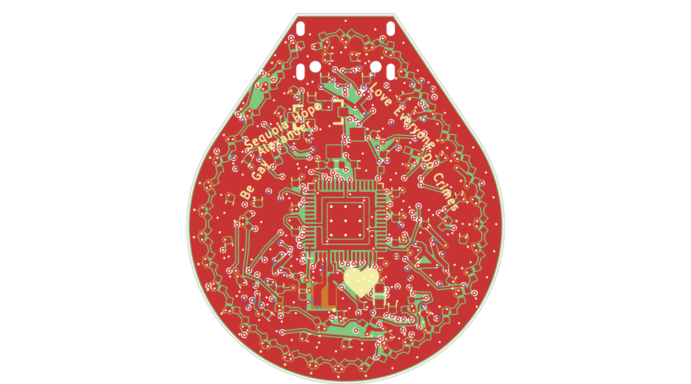
front copper, routed
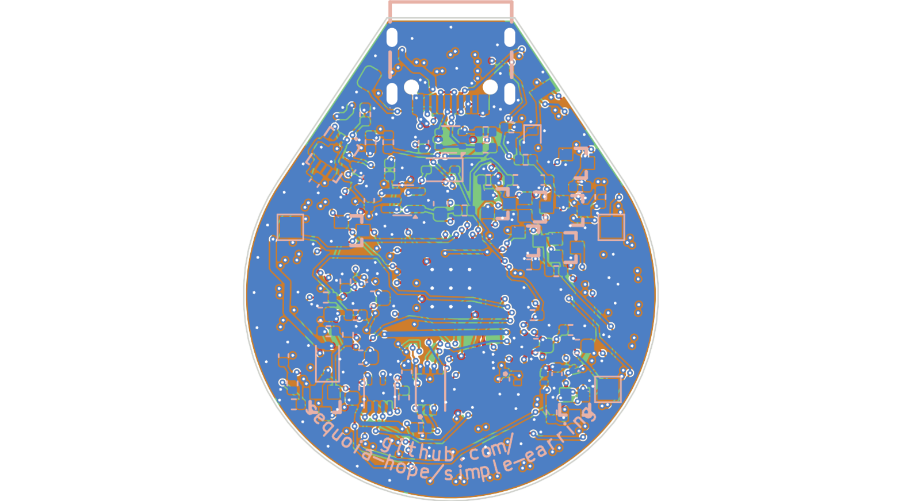
back copper, routed
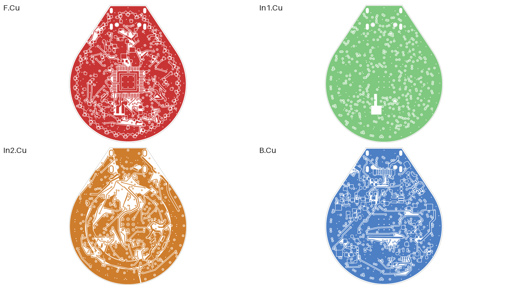
all four copper layers
Oct 27Pour-aware route: In2's LED supply pours a third bigger (superseded 10-27)layoutbenchultraroute's new pour cost keeps signals from carving up In2's VLED and 3V3 pours. In2 copper is up from 320 to 426 mm², and VLED_C is 2 pieces instead of 6. KiCad: 0 errors, 0 unconnected, 0 dangling.
Route: lab experiment pours-1, run
w3-s1. Same recipe as before, with --planes In1.Cu
--pour-cost 3, on ultraroute a190e63.
Against the previous route:
VLED_C: 56 mm² in 2 pieces (was 32 in 6).
VLED_R: 154 mm² (was 78).
3V3: 100 mm² (was 96).
GND plane: still one piece, 666 mm².
Vias: 495 (was 411).
USB pair: 23.8 / 24.2 mm (was 21.3 / 21.3).
No part moved.
Still to review: the VLED nets' 0.15 mm track width, set by
the board's net class. The USB pair also still runs partly uncoupled; that
fix is queued in ultraroute.
front copper, routedback copper, routedevery copper layer
Oct 27Clean route: freerouting leftovers gone, USB pair 21.3 / 21.3 mm, nothing danglinglayoutbenchroute.py lost its last freerouting assists: 8 free-standing locked vias and two overshooting stubs. ultraroute re-routed the board with In1 kept as the ground plane. KiCad: 0 errors, 0 unconnected, 0 dangling; only silk and library warnings remain.
What was wrong: the router input carried 8 locked vias that no
track or pad touched: USB_DM/DP, IMU_SDA/SCL/INT1, SWDIO and SWCLK. They were
freerouting-era assists whose tracks were never locked. ultraroute strips
unlocked tracks and doesn't join free-standing copper, so the vias dangled on
every route. Two locked stubs also dangled:
USB_C_DP's B.Cu run went 0.47 mm past J1's B6 pad.
The VBUS trunk still ended at the tie via's spot from before its
Aug 7 move.
All of these are fixed in route.py.
Route: lab experiment earring-noassist, run
N-s3, the P-s1 recipe (--planes In1.Cu) on
ultraroute 802cb3a. Seeds 0–2 left 1–2 nets open.
USB_DM and USB_DP are both 21.3 mm.
In1 carries no signal, and the GND plane is one piece.
VLED_R is one piece again (78 mm²).
No part moved.
Still to review: In2 carries 480 mm of signal. VLED_C fills
only 32 mm² in 6 pieces, and the VLED nets run 0.15 mm
tracks.
front copper, routedback copper, routedevery copper layer
Oct 27Re-routed with the GND plane kept whole: USB 25 mm, In1 signal-freelayoutbenchultraroute re-routed the board with differential pairs, no power-net necking, and In1 reserved as the ground plane. KiCad: 0 errors, 0 unconnected, no net differences from the schematic. Button sim still passes 54/54.
Source: ultraroute lab experiment earring-planes-in1,
run P-s1.
Recipe: lab general-57's
(earring-kicad-locked, locked copper kept, pre-fanout, diff
pairs, negotiate, rip-up, region plough, tighten) plus --planes
In1.Cu.
Run: 1 thread, 240 s budget. No part moved, so R16 is back at
its committed spot.
Seeds: 1 and 2 routed with 0 open; seed 0 left VBSENSE
open.
Why reserve In1: the best unreserved run (general-57
L-s0) still put 297 mm of signal on In1, the GND reference plane under
F.Cu. easy_pcb's routing flow marks plane layers with --planes,
and the earring had never been routed that way.
Result:
In1 carries no signal at all. The GND plane fills as one piece
(690 mm², up from three pieces and 582 mm²).
USB_DM is 25.1 mm and USB_DP 24.8 mm, matched to 0.3 mm,
mostly on In2 right next to that plane. The 10-26 route had 61.5 and
34.1 mm.
VSYS's narrowest track is 0.23 mm, for 0.1 mm.
The cost: 415 vias (was 323), and more signal on In2.
To review: In2's power pours are more cut up. VLED_R fills
63 mm² (was 178), VLED_C splits into 9 pieces, and 3V3 into 8. Every
pad still connects, but more of the LED current now rides 0.15 mm
tracks.
front copper, routedback copper, routedevery copper layer
Oct 26Fully routed by ultraroute: 0 unconnected, 0 DRC errors (superseded 10-27)layoutbenchThe GPU autorouter routed the bb22fb7 placement with every locked track and via kept. KiCad's DRC after a zone refill: 0 errors, 0 unconnected, schematic parity clean. The button sim still passes 54/54. Not orderable yet: the USB pair is split round opposite sides of the board.
How: ultraroute's locked-copper recipe (pre-fanout, negotiate,
rip-up, nudge, tighten, plough search), six seeds at 240 s each on 2
threads. Seeds 3 and 4 finished at 0 open; the others left 1–2 nets open
(LIGHT, CHRG, VBSENSE, LEDC_D6). Lab experiment
earring-reroute-21.
Kept: seed 3, 45 s, 321 vias, 1354 mm of track. Its only
part move is R16, 0.5 mm north (now in place.py). Seed 4 was slightly
shorter but nudged C26 onto the silk art.
Checked against the plan's routing constraints: BTN_EXT runs
SW2.2 → D6.1 → R30, and a GND via sits 0.98 mm from
D6.2. Routing added no new DRC warning. The 7 dangling items left are the
designer's own locked pre-route vias and tracks (18 before routing).
Not yet acceptable (gate 7): the router has no notion of a
differential pair. USB_DM runs about 60 mm on In2, all the way round the
east half of the board. USB_DP runs about 34 mm round the west half,
across In1 and In2 with 8 vias. 324 mm of signal also runs on In1, which
is the GND reference plane under F.Cu. The fix is either a locked USB pre-route
from J1/R6/R7 to U1 pins 51/52 before routing, or pair support in the router.
front copper, routedback copper, routedevery copper layer
Oct 25Room around the CPU: 19 parts moved to the backhardwarebenchThe charger, LDO, flash, one LED switch and the VBUS parts now sit under the cell, all 1.1 mm or less. Front courtyard area near the CPU is roughly halved. DRC 0, still unrouted.
Why: the front around the RP2350 was the crowded part of the board,
and the GPU autorouter needs room there to fan out the pins. The lower half of
the back was nearly empty, because the coin-cell clip that used to fill it is
gone.
What moved (all ≤ 1.1 mm, the limit under the 1.5 mm foam
tape):
QSPI flash U7 (0.6 mm), directly under the CPU's flash pins, with its
cap C25 and the BOOTSEL resistor R3 beside its chip-select pin.
Charger U2 (0.8 mm) with C16/C17/R8, next to the power-path FET Q2.
D3, R21/R22, C29 and the VBUS-sense divider R19/R20 join it on one VBUS
node.
LDO U3 (0.8 mm) with C18/C19, by its enable network R17/D2.
LED-left switch U4 with C20/R10, at the edge by the plane piece it
feeds.
Result: front parts within 10 mm of centre: 40 → 26, with
courtyard area 107 → 57 mm². The back keeps a clear patch under the CPU
for its escape vias. DRC 0 errors. Cell-fit check: no clash, and it now
fails loudly if a part under the cell has no known height.
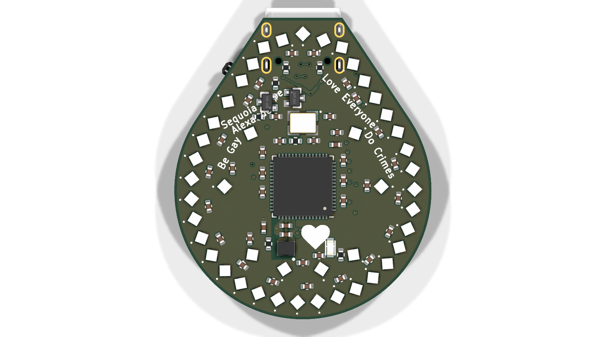
front: the CPU's surroundings after the move
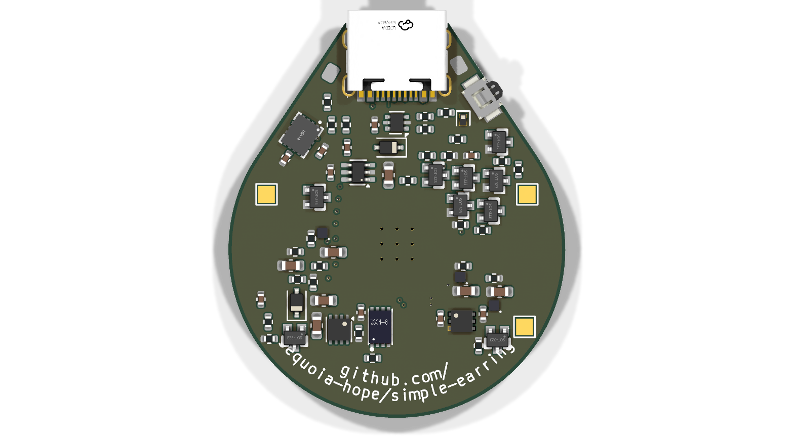
back: flash under the CPU, charger east, LDO and LED-left switch west
Oct 2416-bit LEDs in three zoneshardwarebenchThe ring is now WS2816C-1313 (16 bits per colour) split into left, right and centre zones that power off independently. Placed, DRC 0, waiting for the GPU autorouter.
Why: the earring runs very dim, where 8-bit LEDs step visibly. The
WS2816C has 16 bits per colour plus gamma, and runs down to 3.3 V (the
SK6805 needed 3.7 V). It idles at 0.7 mA per LED instead of 0.3, so
the ring is split into three zones that each switch off: left (LED1–18),
right (LED37→19, entering at the tip), and centre (the inner eight).
How: each zone has its own chain, load switch and level shifter, plus
its own piece of the In2 power plane. A dark zone draws nothing, and it can't
be back-fed through its data line. The three data lines are adjacent pins
(GPIO16–18), so one PIO program can clock all three.
For the router: the LEDs, USB, button, cell pads, and every part with
locked copper (MCU, charger, ESD, VREG cluster) are locked. Everything else
can be nudged.
front: 45 WS2816C on the same ringback: zone switches U9/U10 and shifters Q9/Q10
Oct 24One button, no hot self-start, ESD-proof edge buttonhardwaresimulationbenchThe simulated fixes are in the netlist and on the board: SW1 is gone, D2/D3 are silicon, and the edge button has a TVS. 54/54 sim runs pass; DRC 0. Report.
One button. Holding the power button 2.2–10.3 s (about 5 s
typical) resets the chip into BOOTSEL. It never erases flash: with USB in, the
board waits as a drive; on battery, it turns off when you let go. That second
case is also the hardware force-off for hung firmware. Q6/R29 took SW1's old
front spot. Everything else (U8 74LVC2G14, Q7, Q8, the timer) is on the back,
under the cell, ≤ 1.1 mm.
Hot self-start fixed. D2 BAT54SW → BAV99W and D3 B5819WS →
1N4007WS. Off-state EN is now ≤ 0.03 V up to 85 °C, where the old
board reached 2.27 V. The cost is VSYS ≈ VBUS − 0.8 V on USB.
ESD. D6 PESD5V0S1BL clamps at the switch pad, and R30 (1k) keeps
the strike off D4. At ±8 kV, ≤ 22 mA reaches the latch (it was
~24 A) and the strike no longer counts as a press.
Independent review fixes. Q4 is now a high-threshold LBSS84WT1G
(0.8–2.0 V instead of the CJ2101's 0.45 V), so off-state leakage
can't switch the latch on when hot, even with a steep threshold tempco
and extra Q5 leakage. R27 became 4.7k so firmware that leaves GPIO21's
pull-up on can't creep the timer. C76/R29 became 10n/1M. Q6/R29 moved off
the silkscreen art.
Firmware must change with this board: GPIO21 is active high with no
pull-up, and the long-press-off must stay at or under 1.5 s.
back: the new timer cluster above the MCU
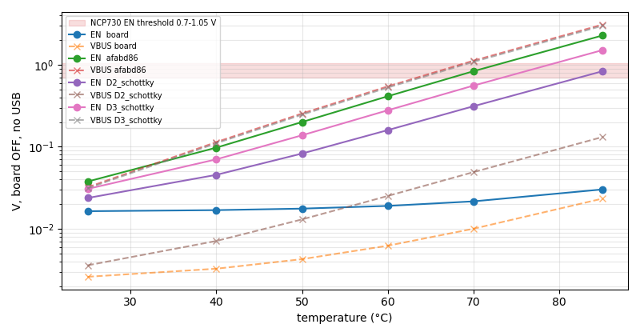
board off, no USB: EN vs temperature, board vs afabd86
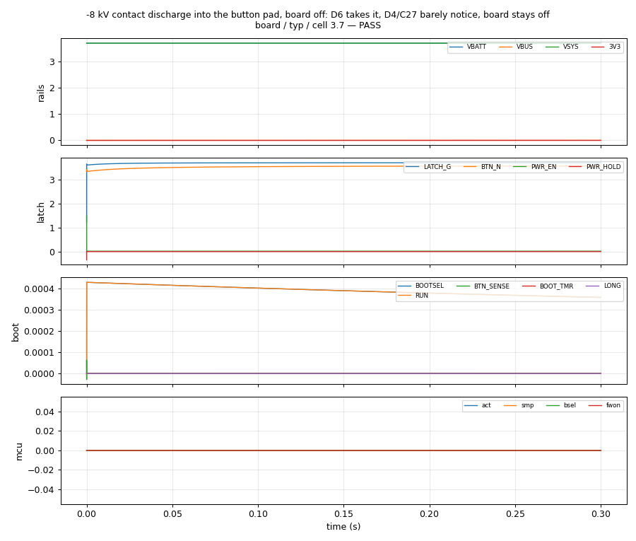
−8 kV into the button pad: the TVS takes it, the board stays off
Oct 24Simulating the power button: a one-button BOOTSEL works, and the committed board turns itself on at ~70 °ChardwaresimulationbenchAn ngspice testbench built straight from circuit.py, with datasheet corners. It found a real defect before fab. Full report.
Hot self-start, in the committed board. With the board off, reverse
leakage of D2's BAT54 clamp (~20 µA at 85 °C) and D3's B5819WS
(~120 µA at 75 °C) reaches the LDO's EN pin. EN crosses its
0.7 V minimum at about 70 °C, so the board starts and the
firmware latches it on: an earring left in a hot car drains itself. Fixing
either diode alone isn't enough; with both silicon, EN stays at 0.02 V up
to 85 °C. Not fixed yet: needs a decision on D3.
One button instead of two (proposal). SW1 goes. Holding the power
button 10 s makes a Schmitt-gate timer pulse RUN low and hold QSPI_SS
down, so the bootrom wakes up into BOOTSEL. It fires 2.1–8.5 s into the
hold across corners. On battery the same hold is a hardware force-off for hung
firmware, which the current board can't do. With the leak fix, every scenario
passes at every corner (−20/25/85 °C, 3.0/3.7/4.2 V cell).
Also found, by the independent review: a negative ESD hit on the edge
button acts like a press and pushes ~24 A through D4. It needs a
bidirectional TVS, in the committed design too.
Also: 3D models for every part except the test points, including
SW2 (B3U) and the LPR302823 cell on its VHB tape. The 3D
viewer now shows the real back-side stack.
Board off, no USB: EN vs temperature. Red band = NCP730 EN threshold. Purple = both diodes silicon.
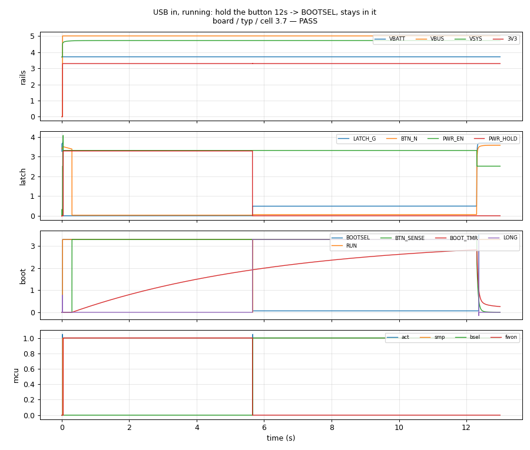
Hold with USB in: RUN pulse, strap low, BOOTSEL.
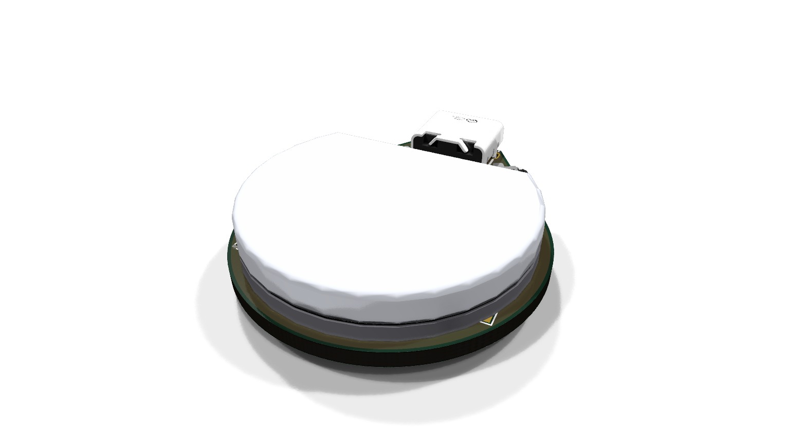
the cell + 1.5 mm VHB on the back
Oct 22LiPo instead of the coin cell: LPR302823 round pouch, wire pads, and a soft-latch power button where the slide switch washardwarelayoutmilestonebench140 mAh (~120 at 4.2 V) against 85, in a 4.7 mm stack against 3.8. Placed and DRC-clean, not routed yet: waiting on brief sign-off.
The cell. LiPol LPR302823: Ø28 mm round pouch with one
flat, PCM inside the outline, 3.0–3.2 mm, 140 mAh, 70 mA max
charge. It is a 4.35 V "HV" cell, but it stays on the 4.20 V
LGS4056H on purpose: its PCM overcharge trip can be as low as 4.305 V.
R8 goes 22k → 18k (50 mA, 0.36C). The cell is taped to the back
on 1.5 mm VHB over parts no taller than 1.1 mm, flat facing the tip,
and its wires go to two pre-tinned pads, one each side of J1, ≥0.6 mm
from any other copper.
The slide switch had to go. Its inner corner sits 9.4 mm from
centre, inside any Ø28 circle. A sweep against real copper found no cell angle
that cleared both it and J1. It is replaced by an Omron B3U-3000P
side-push button higher up the left tip edge, plus a soft latch
(Q4 CJ2101, Q5 BSS138W, D4 BAV70W, R24/R25, C27). Press and the CPU wakes;
it drives GPIO20 PWR_HOLD to stay on and reads the button on
GPIO21; a long press turns it off. Off-state drain is ~µA.
Firmware must now hold PWR_HOLD, or the board turns off when you let go
of the button.
What it frees. BT1's Ø8 GND centre pad and the six-bump hack are
gone, along with route.py's "no vias inside r 4.6" rule. That disc is
what stranded LIGHT and VBUS_SENSE in rev 2's route.
Reviews. Four independent passes (parts, brief, latch circuit,
placement) caught real problems that are now fixed:
a cell rotation that only cleared J1 by courtyard, not by copper;
pads 0.27 mm from VLED vias;
a Schottky in the latch that would have switched the board on by itself
in a hot car (now a silicon BAV70W);
a shapely-vs-KiCad rotation-sign mismatch.
Everything is in design/: intent, brief, decisions, gates
0/1/2/4/6.
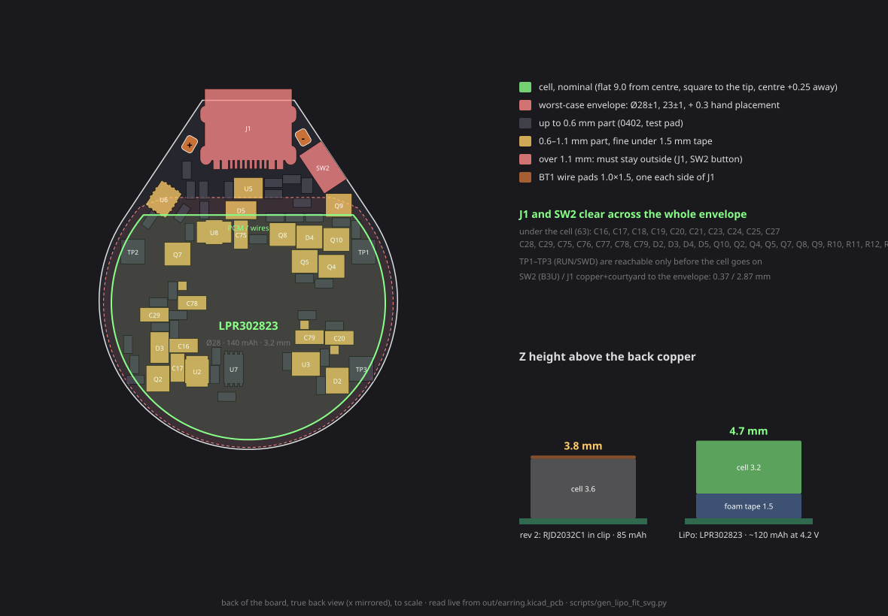
Back view: the cell's worst-case envelope against every back-side part, the pads and the button; and the stack height against the coin cell.back, placed (unrouted)
Aug 31C22363833 would retire the six-bump GND hack — but its land runs off the board, and the only place it fits is on top of J1bomhardwarebenchA socket carries its own negative contact, so it needs no Ø8 centre pad. The land is 1.19 mm too wide, and it is 1.9 mm taller.
The MY-2032-12-R is a retainer: it clamps the coin against a bare Ø8
pad on the back, and that pad is the negative terminal. That is the awkward
requirement on this board — 176 B.Cu track endpoints sit inside r9.5, and 35µm
of copper under 20µm of mask stands ~25µm proud of a bare pad face, so the rigid
coin rode on soldermask and never touched copper. Today's answer is a ring of
six mask-defined solder bumps (gen_footprints.py), which works but
is a hack standing in for a land we could not give it.
A socket removes the requirement outright: the negative contact is a
tab inside its own base, so the board only needs two ordinary end pads and the
copper under the coin becomes irrelevant. C22363833 (Lianxin CR2032-BS-6,
gold, SMT, 11k in stock at $0.19/50) is exactly that part class, and its
mounting drawing confirms it — two pads, no centre land.
Read the outline, not the bounding box
The first pass of this test drew the part as its 31.9 × 16.0
bounding rectangle, and that was wrong in a way worth recording. The plastic
body is only 28.8 long with C1.5 chamfered corners; the ends that
reach 31.9 are narrow 7.1 mm metal solder tabs. Treating the box as
the body overstated the plastic overhang ~5× — 2.50 mm claimed
against 0.55 mm real, at one chamfer vertex. The other chamfer
vertex is inside the edge by 0.07 mm. Panel 1 and 2 above now draw
the true outline; grey is metal, red is plastic.
What actually blocks it
The land is wider than the board — this is the real one. Pads sit at
±15.30 mm; the round body is R 15.25. Pad corners reach
16.44 mm, so a centred part hangs 1.19 mm past the edge. That
is metal-tab geometry against board outline: no amount of re-placement moves
it.
…but rotating it does find a legal land. Sweeping position ×
rotation turns up 2227 placements where both pads sit fully on copper —
all of them rotated ~70–110° so the land runs down the long tip axis, which is
35.75 mm against the 30.5 mm width. The best is
(+1.75, −2.50) @ 72°. Every single one puts the body on top of
J1, the USB-C receptacle — and J1 is not a part placement can move: it is
pinned by the tip geometry and its 1.3 mm mating-face overhang. Those
placements also push the plastic overhang back up to ~1.9 mm.
It sits flat — and this one is soft. The incumbent touches down on
two 3.0×4.5 feet at ±12.4 and arches over everything between them, which is the
only reason a back side this crowded works. The BS-6's base covers 12 of the
23 back-side parts (TP1/TP2/R11/C21 completely, plus SW2, Q2, D2, C23, C24,
R12, R17, TP3). Correcting the outline did not reduce that count — it is
the 16 mm width that catches them, not the ends. But unlike the land, these
are ordinary passives and test points: re-placement could clear them, so
this should not be counted as a blocker.
And it is taller
5.5 mm vs 3.60 mm — +1.9 mm, 53%. Worse, that 5.5 is
drawn around a 3.2 mm CR2032 and the fitted cell is a 3.6 mm
RJD2032C1. A spring clip splays 0.4 mm; a moulded pocket does not. It would
also push the case's --bat (5.30 mm) up rather than let it
shrink.
What this establishes as the real requirement: a self-contained
two-terminal holder with a land pitch inside ±13 mm and a height at
or under ~4 mm. parts.yaml already tracks BAT-HLD-001 (±11.43)
and MPD BC-2003 as near-misses on the clip side; the socket side has not been
surveyed against those two numbers yet. Diagram from
scripts/gen_bs6_svg.py, which reads the board live, so the
collision list cannot drift.
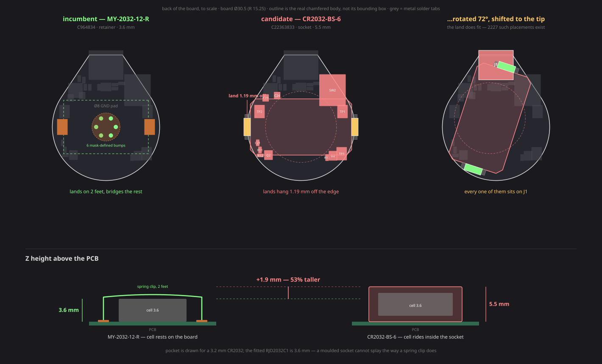
1: the incumbent lands on two feet and bridges the rest. 2: the BS-6 centred — land 1.19mm off the edge. 3: rotated into the only land-legal window, where the body lands on J1. below: the 1.9mm height penalty.
Aug 31Rev 2 routed to 5 unconnected / 0 errors — and the retry loop is not buying what it claimslayoutbdc87fc1371 tracks, 258 vias, zero DRC errors. Five nets stay open, and five of the six seeds returned the same answer.
First routed board carrying the rev-2 power path. 0 DRC errors, 117
warnings (60 silk-over-copper, 40 silk overlap, 6 dangling vias — the usual
crop), and five unconnected nets. The renders and layer stack above are this
board.
What is still open
VBUS_SENSE, U1.41 → R19.2 — 8.2 mm cross-board
LIGHT, U1.40 → Q1.2 — 7.3 mm cross-board
VBUS ×2 — the tip trunk (the 3 segs route.py reported
blocked by routed copper) and the short branch to the new R19
3V3, a 1.6 mm stub at the MCU
The two long ones share a cause. Both leave the MCU’s jammed west pin
window — pins 40 and 41, at radius 3.45 and 3.51 mm — and have
to reach the east side. The obvious shortcut is a B.Cu hop straight across, but
BT1 sits on the back with a Ø8 GND pad dead centre, so the back inside r4.0 is
solid copper and a via wants r > 4.4. Both nets therefore
originate inside the blocked disc: they have to escape radially on F.Cu
past the coin before the back layer is available at all. That is why the trick
that works for this board’s other stranded nets — one committed
B-transition via at the pin — does not apply here.
Attempts 2-6 routed to exactly 30 every time. That is not seed
variance, and the retry unit in build.py is built on the assumption that it is
(“freerouting is seed-dependent, so a failed finish re-rolls the routing”).
Only attempt 1 differed, and the one thing that made it different is that it
started from a board that had never been through a completed route — the earlier
run hung in freerouting, so it left pre-routes and zones but no post-route pours,
keepouts or ring stubs. Attempts 2-6 each started from the previous attempt’s
finished board. wipe() does delete every track and zone, so the
mechanism is not obvious and I have not proven it — but the pattern is
strong enough to say the loop cost ~2.5 h to produce one real sample, and
that resetting to the freshly-placed board between attempts is worth testing
before trusting the next six-attempt run.
Not ordered, not orderable: five open nets. Fab export was
deliberately skipped for that reason.
Aug 31Freerouting hung before pass 1 — a locked polyline, not congestionlayouttoolingc0cd016The first full route since rev 3 never started. Bisected to LED_D3’s locked hop; cut to one segment, and the board routes again.
Symptom: silent, 100 % CPU, nothing in freerouting’s own log
after the settings dump, both 900 s tries burned, no SES, twice. The
static gate was clean — kicad-cli DRC with the
.kicad_pro beside the board reports 0 errors on the pre-freerouting
statics — so this was not the known locked-wire-clearance burn.
A hang is deterministic, so the retry loop was just burning 30 min an
attempt. Bisected instead by deleting (wire …) blocks from the DSN
and probing at -mp 2 (~90 s each), run concurrently with a
per-probe -Djava.io.tmpdir so each got its own log. Verdict is
simply whether Pass # ever appears:
full hop HANG only CHRG_DONE dropped HANG
hop dropped entirely routes hop's 3 middle segments HANG
segment 2 alone routes segments 2 + 3 HANG
segment 3 alone routes segments 1 + 2 + 3 HANG
So the trigger is a fixed polyline — any two of those segments meeting
at a vertex is enough. My standing note on this was wrong. It blamed
“fixed wires that start on a component pad”, but CHRG_DONE is a
seven-segment fixed chain landing in U2 pad 6 and it routes; the VLED
C32→C30 link touches a pad at both ends and it routes; and trimming
LED_D3’s two pad-landing segments off while keeping the three middle ones
still hangs.
The hop keeps its one load-bearing segment, the vertical past SW2’s NPTH
peg. A lone fixed fragment still does the job because freerouting has to reach
both of its ends — the wire is forced through the corridor and it does the two
pin escapes itself. All four probe SES files come back with the same LED_D3 wire
count with or without it. Same shape as the trick that already works for stranded
nets here: one committed B-transition via, never a locked path.
Single hints work, locked paths poison.
Two things fixed alongside. Both tries timing out left r as
None, so route.py printed no diagnostic at all
for the one failure mode that most needs one; it now reads freerouting’s log
and reports the pass count for the current run, calling out “hung before
pass 1” explicitly. And worth knowing while reading that log:
/tmp/freerouting is shared by every project on this machine and
appends across runs — the 241k PolylineTrace.normalize lines that
looked like this board live-locking turned out to be a different project’s,
from Aug 29.
Aug 31Rev 2 power path: split VBATT from VSYS so USB runs the boardhardwarelayout2e9399cThe root fix for “no lights at all” — the charger’s 41 mA no longer feeds the running board, so the cell actually charges and the ring lights at any state of charge.
Rev 1 hung the LDO input and the LED load switch on VBATT — the
same node as the charger’s BAT pin — so the LGS4056H’s ~41 mA
program current was shared with the running system. 17 mA of MCU plus
17.5 mA of LED rail left the cell about 6 mA, and a flat cell could
never climb to the SK6805-EC10’s 3.7 V minimum VDD before someone
unplugged it. That is a power-path problem, not a firmware one.
VBUS --|>|-- VSYS D3, B5819WS Schottky, ~0.3V at our ~60mA
VBATT --[Q2]-- VSYS CJ2101 P-FET, on only when no cable is in
VSYS -> U3 (LDO IN), U4 (LED load switch IN), C18, C29
VBATT -> U2 pin 5 (charger BAT), BT1, C17, SW2 [cell node ONLY]
Q2’s orientation is the whole trick: source = VSYS,
drain = VBATT. A P-FET’s body diode conducts drain→source, so
this way it points cell→VSYS. It blocks the 4.7 V USB rail from
back-feeding the cell around the charger — which is exactly what the intuitive
wiring (source on the battery) would do through the body diode — while still
letting the cell carry the load through ~0.4 V of diode if VSYS sags below
VBATT, covering the ~200 ms of VBUS decay on unplug. The gate is R22
10k from VBUS against R21 1M to GND: near VBUS with a cable in
(Vgs +0.25 V, hard off), following the dead VBUS node without one. That
node is not floating — R19/R20 pin it under 0.65 V even against R18’s
backfeed — so Vgs is −2.4 V at a 3.0 V cell and Q2 is fully on.
This retires the R8 rework rather than performing it. 22k already gives
40.9 mA, which is exactly the fitted RJD2032C1’s rated 40 mA, and
the reason 15k was tempting is gone. So is the hazard that blocked it: with the
system off the cell, the full program current reaches the cell in
either switch position.
What else falls out — DONE can finally assert (the cell’s current
actually tapers to ITERM now), VBSENSE reads a true unloaded cell while
charging, the ring lights on a dead cell, and the board runs with no cell fitted
at all.
The cost is a level shifter, and it is not optional. SK6805 VIH is
0.7×VDD; on the cell that peaked at 2.94 V so a 3.3 V pad drove
the ring directly, but on VSYS it is 3.29 V typical and 3.5 V at the
5.25 V USB ceiling. Q3 (BSS138W) is an open-drain inverter with R23
1k pulling LED_D0 up to VLED itself, so the swing is a full VLED rail
whatever VLED is. Only pixel 1 needs it — every downstream DI is driven by
the previous DO. Diode-dropping VSYS into the LED window instead does
not work: two Schottkys land at 3.8 V at the low corner (under the
floor) and 4.65 V at the high one (VIH 3.26 V, still failing). The
window is narrower than the corners, so the level has to move, not the rail.
⚠ Firmware pairing, rev-2 boards only. The stage inverts,
so main.cpp needs
gpio_set_outover(LED_DATA, GPIO_OVERRIDE_INVERT). The pad
override sits after the peripheral mux, so the NeoPixel PIO program is untouched.
Do not flash it to a rev-1 board. Idle is safe either way: PIO idle-low
→ pad high → Q3 on → LED_D0 low, the reset level the ring wants,
and before the override is set VLED is off (R10 holds LED_EN low) so R23’s
pull-up is dead and the line cannot float.
SW2 deliberately stays on VBATT. On VSYS the R11 divider would read a
constant 2.35 V whenever a cable is in, saying nothing about either the cell
or the switch; on VBATT all four states stay separable with VBUS_SENSE as the
cable bit.
Also in this commit
BT1’s negative contact is now six solder bumps. The first
assembled board would not hold the cell against the centre pad: 176 B.Cu track
endpoints sit within r9.5 of it, and 35 µm of copper under 20 µm of
mask stands ~25 µm proud of a bare pad face, so the rigid coin rode
on soldermask and never touched copper. Hand-tinning fixed it on the bench.
Baking that in is not “add paste to the Ø8 pad” — molten solder on
one big bare opening has nothing to hold it and levels out ~8 µm thick.
Solder only stands proud if mask dams it. So the centre contact becomes a ring of
six mask-defined bumps, Ø1.2 openings on r2.8 pasted 1:1, over the same Ø8 copper
left mask-covered. At a 0.12 mm stencil each holds ~0.07 mm³ and domes
~0.12 mm, i.e. ~65 µm clear of the mask plane. Six on a ring because
three points define the plane the coin sits on and a single central dome would
let it rock. The copper does not move, so nothing the router already solved
changes.
R19/R20 are placed for the first time. The VBUS sense divider reached
the netlist in 619042b but never the board, so both sat at the
origin and the relaxer scattered them through the MCU decaps — that is where the
C2/C20/C74/LED45 courtyard overlaps came from.
tools/scan_spot.py, the pad-polygon placement scanner the
whole placement came out of, and tools/pad_preview.py, which exists
because rotation sense is negated on the back side and the only safe way
to pick an orientation is to place it and read the pads back. The scan found the
front has exactly six legal SC-70 spots board-wide, all in the south-west
— which is why Q2 lives on the back annulus and Q3 took the best of the six.
A lesson worth keeping. Locked pre-route geometry moves with
the footprints it is derived from. R22’s coarse-scan spot was legal when
scanned, but the relaxer settles C16 a hair differently once the new parts are
fixed, and route.py anchors the locked CHRG_DONE landing loop to
C16 — the pad ended up 0.1227 mm from that track against a 0.127 rule.
Re-scanned at 0.05 mm, 70 µm east. All six new passives are now exempt
from the relaxer for the same reason, and the DRC gate is re-run after every
placement change.
Routed the same day — bdc87fc, 0 DRC errors with five
nets still open. See the newest entry at the top; the live renders and layer
stack below are that board, not this placement.
placement preview front — Q3/R23 west of the MCU, D3/C29/R21 in the east pocketplacement preview back — Q2 on the south-east shoulder, mirroring D2/R17
Aug 28Case: flush LED pockets, six chonky clip tabs (three a side)case02ffecfEvery LED gets the same flush conical pocket, and the rim drops from ten 4 mm stations to six chunky tabs.
The diffuser floor loses the eight per-LED bosses over the inner ring; all 45
pockets are now identical cones (over the raised mid floor the cone just emerges
shallower, same ceiling everywhere).
Stations can override lip depth: the 0° front tab runs 0.65 mm so it
clears the BT1 clip-arm courtyard corners at every probe depth. All station
margins positive, halves stay single valid solids, plug corridor clear. Rear
engagement up 9.7 → 14.5 mm³, front
24.0 → 17.1 mm³.
section: pockets under the LEDs, cell inside the cup
Aug 28Bench tools that were living untrackedtoolingbench00b48b4A live charge plotter, the R8 rework diagrams, and a host USB controller reset.
tools/charge_monitor.py plots live VBATT against the two lines
that decide whether the board works: 3.70 V (SK6805-EC10 minimum VDD) and
4.20 V full. Strictly read-only — the firmware’s command handler takes
X to wipe stored sessions, so it never writes a byte to the port.
scripts/gen_rework_svg.py draws the rework into
out/rework/, reading the ordered revision straight out of git
rather than the working tree — the boards in hand are that revision, and
hw/earring/a/earring.kicad_pcb can legitimately be mid-generation with every
footprint stacked at one point.
tools/reset_usb.sh unbinds and rebinds one xhci PCI function to
power-cycle the port the earring flashes through. Every port on the controller
blips for a couple of seconds, keyboard included — which is exactly why it is a
script and not something to type mid-way.
Aug 28Firmware: blink the charge arc, and wait for C21 before believing the ADCfirmware152c3caThe dithered assembling arc banded on hardware; it now blinks 1 s on / 4 s off, which also hands four fifths of the LED load back to the charge budget.
The arc used to dither spatially — every 50 ms a random fraction of the
dark arc LEDs snapped on — to hold one solid colour at counts too small to fade
through. On hardware it shimmered rather than reading as a fill. It now simply
blinks, and the measurement moves to the falling edge: rail down first, then
sample, so there is no LED load on the cell while measuring.
Boot sensing was reading garbage. VBSENSE comes off a 1M:1M divider
with C21 = 100 nF on the bottom leg, so it rises with τ = 50 ms
from an empty cap at power-on. A 4.0 V cell (68%) decoded as 0–4%
anywhere in the 60–100 ms window, and under ~55 ms VBSENSE has not even
cleared the 1.27 V band edge, so the switch position itself decoded wrong.
Boot now waits to 400 ms (8τ, residual under 0.1%) and a separate
8-sample warmup throws away the ADC’s first conversions — 500k source
impedance is far above what the RP2350’s sample-and-hold wants.
Aug 28Rev 3: USB-or-switch LDO enable, VBUS presence sensehardware619042bTwo gaps closed, both about knowing the board is plugged in.
SW2 no longer drives the LDO enable directly. Its common becomes SW_ON, and D2
(BAT54SW, dual series Schottky) ORs two sources into PWR_EN: diode 1
passes SW_ON, diode 2 clamps EN to VBATT + Vf. The clamp is
mandatory — the NCP730’s abs-max V_EN is (V_IN + 0.3), not an
independent rating, so a bare feed from 5 V VBUS would violate it
essentially always. Net effect: USB boots the chip with the switch off, so
plugged-in charging can be indicated.
R19/R20 tap VBUS 10k:10k into ADC1. CHRG and DONE cannot tell
“unplugged” from “plugged in and finished” — when
the charger terminates, both open-drain pins release and the indicator loses its
only evidence a cable is attached. Seen on the bench Aug 25: cell full at
4.11 V, USB in, chrg=0 done=0, firmware correctly but uselessly back on the
drip show. The low impedance is the design, not an oversight: with SW2 on and no
USB, PWR_EN backfeeds through R18 and floats the dead VBUS node, and a
high-impedance divider would read that as plugged in.
Placement of D2/R17/R18 came from the first full-board scan against pad
copper, not just courtyards — SW2’s pads stick out past its
courtyard polygon, and J1’s tie pads report GetSize
0.01×0.01 while spanning 1.5×1.4 mm of real copper, so
size-based scans sail straight through them.
Aug 28Generated TPU clip-on shell — LED diffuser + battery cupcase3528329Two flexible halves, generated from the ordered board (43eadc1) read straight out of git — outline, all 45 LED positions, every courtyard.
Front half is a diffuser: a tapered pocket over every LED, 1.10 mm of TPU
between pocket ceiling and a smooth flat outer face. BOOTSEL presses through a
0.70 mm membrane rather than a hole. Rear half is a closed cup over the coin
cell and clip — the short-protection half.
Each half locks to the board only, so the rims interleave as a plain
castellation with nothing protruding. The tip is left clear for the mount plug
(the earring hangs from a loop soldered to a male USB-C plug that stays in J1),
and SW2 gets an open thumb scoop in the left flank. Both halves print
outer-face-down with no supports.
Also fixed here:outline.segs() had the arc sweep as
2π − 2·ang where it should be π + 2·ang.
That overstated the perimeter by 12.2 mm and made the sampled polygon
self-intersect on the left flank, so inside() answered wrongly there
and LED38 lost its floor-drop boss.
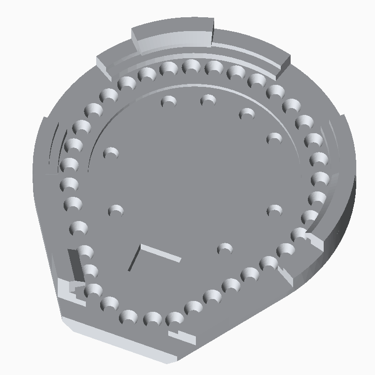
front half inside: 45 LED pockets, seat ledge, clip stations
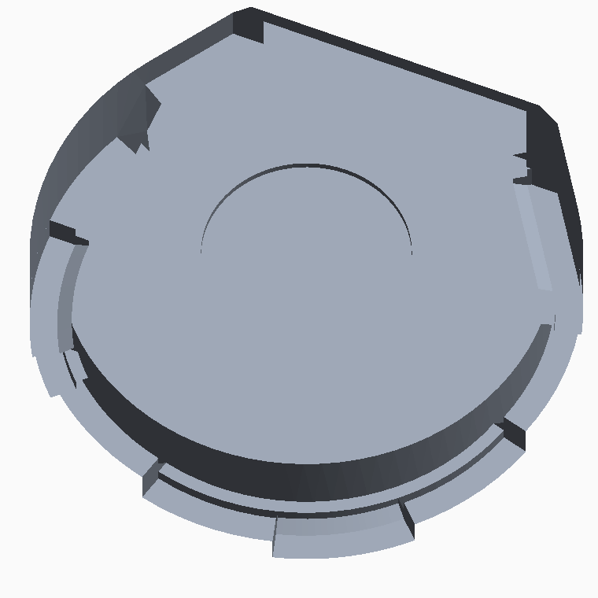
rear cup inside: cell pad, ramped seat ledge, clip fingers
Aug 27R8 charge-current rework proposed — and blockedbenchhardwarebench22k → 15k to get the cell more than ~6 mA. Blocked by SW2-off, and now retired outright by the Aug 31 power path.
The ordered boards wire the switch straight to the LDO enable, so switched
off the cell takes the whole program current: 22k = 1.0C,
15k = 1.5C on a cell with no published maximum. The rev-2 R17/R18/D2
network that would have fixed that is not on the fabricated boards.
I_sys ≈ 17 mA was derived by cancelling dQ/dV against two
measured charge runs. Superseded: splitting VBATT from VSYS removes the
shared-node problem entirely, so 22k stays.
Aug 27The fitted cell is an RJD2032C1, not the LIR2032 the schematic namesbenchbombench85 mAh NMC, 3.6 mm thick, flat 40 mA charge with no published maximum.
22k on R8 already gives 40.9 mA, i.e. the cell’s full rated charge
current — which is what killed the 15k rework. Internal resistance is
≤700 mΩ, so the firmware’s 150 mV IR correction in
chargePct is roughly 5× too big; on the rev-2 power path the
cell is unloaded while charging anyway and the correction should drop to the
charger’s own ~28 mV.
Still to be reconciled in design.yaml and
circuit.py’s BT1 value.
Aug 27Why the ring was dark: VLED under the SK6805 floorbenchbenchMCU, USB, IMU, flash, charger and ADC all verified good while the board showed nothing at all.
SK6805-EC10 needs 3.7 V minimum VDD. VLED is VBATT through the TPS22913,
and the cell was living at 3.35–3.6 V — so the ring could not light, and no
firmware change would have helped. Check VBATT ≥ 3.7 V
before blaming firmware or the ring. This is the finding the Aug 31
power path is the answer to.
Aug 25Firmware: halve the power draw, rebuild the charge indicator, log wearfirmwared5b0cfaBattery measured ~1 h. Three levers: 50 MHz, a show/nap duty cycle with VLED cut, and a lazier pattern.
clk_sys 150 → 50 MHz (the awake MCU was ~20 mA of the
budget), and the show now plays ~12 s episodes separated by naps with VLED
cut — 45 idle SK6805 draw ~13.5 mA even showing black.
Nap length is tiered by activity, calibrated from a logged stand/walk/dance
session worn on the ear. The existing motion envelope separates all three with
no overlap (standing 25–30, walking 84–159 p10–p90, dancing 491–925), so
one filtered value drives the rhythm: 25 s still / 5 s walking /
2 s dancing. Walking had been napped through ~50% of the time — exactly when
the earring is seen.
Aug 25Board alive: USB, IMU, LEDs and charger all passbenchmilestoneff704e1Fixed by tinning the centre pad and fitting a charged cell.
Gotchas worth keeping: a post-flash warm reboot needs an SW2 power cycle; with
a battery fitted a USB replug is not a reset; and the flaky-USB
root cause was a discharged cell, so swap in a charged one before blaming a
board. Test firmware lives in firmware/.
Aug 25Rev 2 electronics: external flash, MYOUNG clip, ambient light sensorhardwarebom81e2a0eRP2350A + external W25Q16JV, BT1 swapped to the flat-foot MYOUNG MY-2032-12-R, and an ALS-PT19-315C on ADC0 by the heart.
The battery clip swap matters most: the ordered rev’s BT1 lacks the
Ø3.5/3.6 thru-holes the QIJEY clip needs, so the fabricated boards cannot take
that part at all. Generator drift against the ordered board was also fixed here —
fresh builds had become unroutable — along with a shipped-truth via corridor and
straggler assist vias in route.py.
Aug 8ORDER PLACED at JLCPCBmilestone43eadc1Board fully routed, DRC 0/0. This revision is the hardware in hand.
Every bench page — the rework diagrams, the TPU case — reads
43eadc1 straight out of git rather than the working tree, because
the working tree has been on rev 2 and then rev 3 ever since and is not the board
that exists. A worktree of it is checked out at
~/pcb/simple_earring_shipped.
Aug 6Datasheet review of every chip, then a layout fix passlayouthardware3543adfTwo fatal pinout bugs: the IMU’s pins 12/13/14 and the BOOTSEL switch pairing were both wrong.
Lesson: verify pin maps against primary datasheets, not against symbols. The
fix pass that followed healed the 3V3 feed necks, stitched the pours and
chamfered the corners, landing at DRC 0/0.
Aug 54-layer stackup, part swaps, generated schematiclayoutbom0513be3Dropped 6 layers to 4 for JLC lead time, and made the schematic a generated artifact rather than a hand-drawn one.
Part churn along the way, all of it from stock or package checks: RP2354A went
OOS so the design became RP2350A + external QSPI flash; the TBA-C1010MB LED went
OOS and became the SK6805-EC10; the crystal became the RP2350-recommended
ABM8-272-T3; and C25804 turned out to be an 0603 on an 0402 land — check
package, not just value.
Aug 3This dashboard, the layer-stack viewer, and the 3D boardtooling25be6fdGenerated from render.py, served from out/, auto-refreshing every 15 s.
The 3D viewer uses TrackballControls rather than Orbit so the board can be
tumbled continuously end over end with no pole clamp.
Aug 2Generated-PCB framework: first fully-routed DRC-clean buildmilestonetoolingf2bb985Outline, placement, routing, DRC, renders and fab exports, all from design.yaml + circuit.py.
The teardrop board, USB-C at the tip, perimeter LEDs and an insertion-safe
back followed within the same day.
 Front
Front